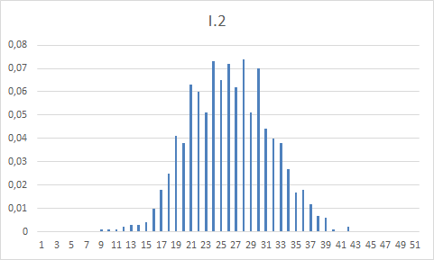
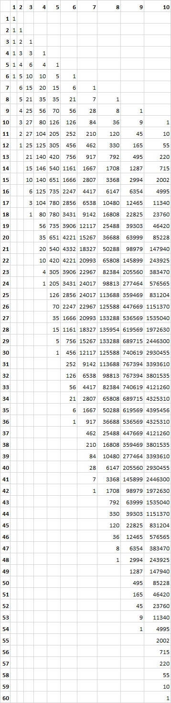
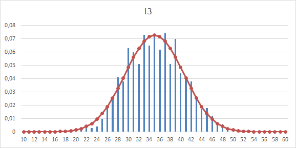
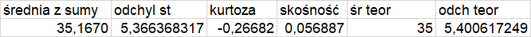
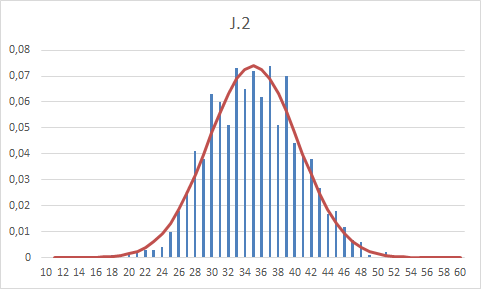
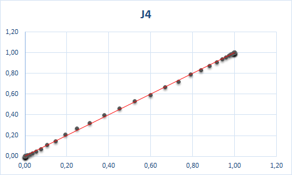
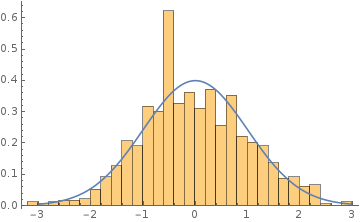
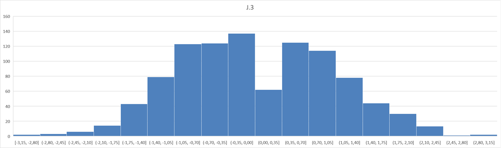
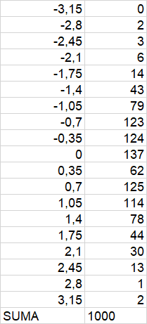

Odpowiedzi do laboratorium nr 2.
Odpowiedź do zadania 1
rozkład normalny prawdopodobieństwa
a) 0,0668 b) 0,8413 c) 0,6827 d) 0,9545
Odpowiedź do zadania 2.b
empiryczny rozkład prawdopodobieństwa

Odpowiedź do zadania 2.c
kombinatoryka dla 1-10 kostek

Odpowiedź do zadania 2.d
porównanie z rozkładem teoretycznym

Odpowiedź do zadania 3
miary rozkładu z próby losowej

Odpowiedź 4.a
porównanie z rozkładem normalnym N(70/2 , 5*sqrt(7/6))

Odpowiedź 4.c
Wykres typu P-P

Odpowiedź 4.d
standaryzacja rozkładu - wykres rozkładu prawdopodobieństwa

pomocniczo histogram dla zmiennej losowej Z

pomocniczo szereg rozdzielczy dla zmiennej losowej Z
